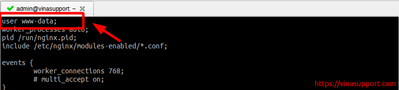
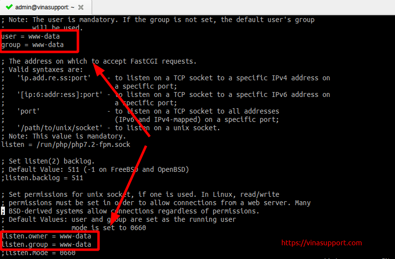

Thay đổi user chạy nginx Server và PHP-FPM
Vì sao cần thay đổi user chạy Nginx Server và PHP-FPM? Nếu bạn có một
web server chạy nginx, nó sẽ chạy mặc định với user là www-data
(trên Ubuntu / Debian ) hoặc nginx (trên CentOS / Red Hat).
Với user mặc định này, bạn không thể login được và bạn sẽ gặp các vấn đề
về phân quyền thư mục, file. Vì vậy nếu bạn muốn nginx và PHP-FPM chạy
dưới quyền user của mình thì mình cần sửa như sau:
Thay đổi user chạy nginx
Sửa file nginx.conf, thường được đặt tại đường dẫn /etc/nginx/nginx.conf
và thay đổi user bằng tài khoản của bạn:

Sau đó restart lại nginx bằng lệnh:
sudo systemctl restart nginx
Thay đổi user chạy PHP-FPM
Sửa file www.conf, thường được đặt tại đường dẫn /etc/php/<version_cua_php>/fpm/pool.d/www.conf
và thay đổi các thông số sau bằng tài khoản của bạn:
- user
- group
- listen.owner
- listen.group

Sau đó restart lại PHP-FPM bằng lệnh:
sudo systemctl restart php-fpm